软件开发工具实践实验报告
| 成果总览 | 验证结果 |
|---|---|
| 正式实验 | 按课程大纲分为 8 个独立实验 |
| 扩展实践 | Packet Tracer 简单局域网通信 |
| 本地构建 | Hexo 生成静态报告并可本地预览 |
| 远程管理 | SSH 登录与 SCP 文件传输成功 |
| Web 部署 | Nginx 返回 HTTP 200，本机与校园网局域网地址可访问 |
一、实验一 Web 开发环境
实验目标
在 Windows 主机上配置 Git、Node.js、npm 和 Hexo，建立能够编写、生成并本地预览静态网页的 Web 开发环境。
关键操作
git --version node -v npm -v npm config set registry https://registry.npmmirror.com npm config get registry npm install -g hexo-cli hexo -v hexo server
本地预览地址为 http://localhost:4000/。项目通过依赖清单记录 Hexo 环境，并使用项目本地命令完成构建。
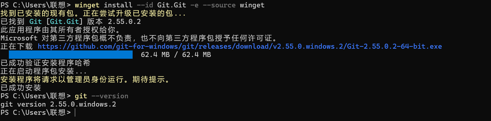
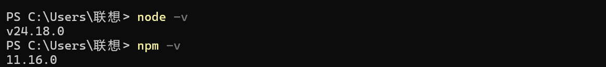
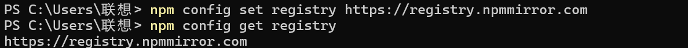
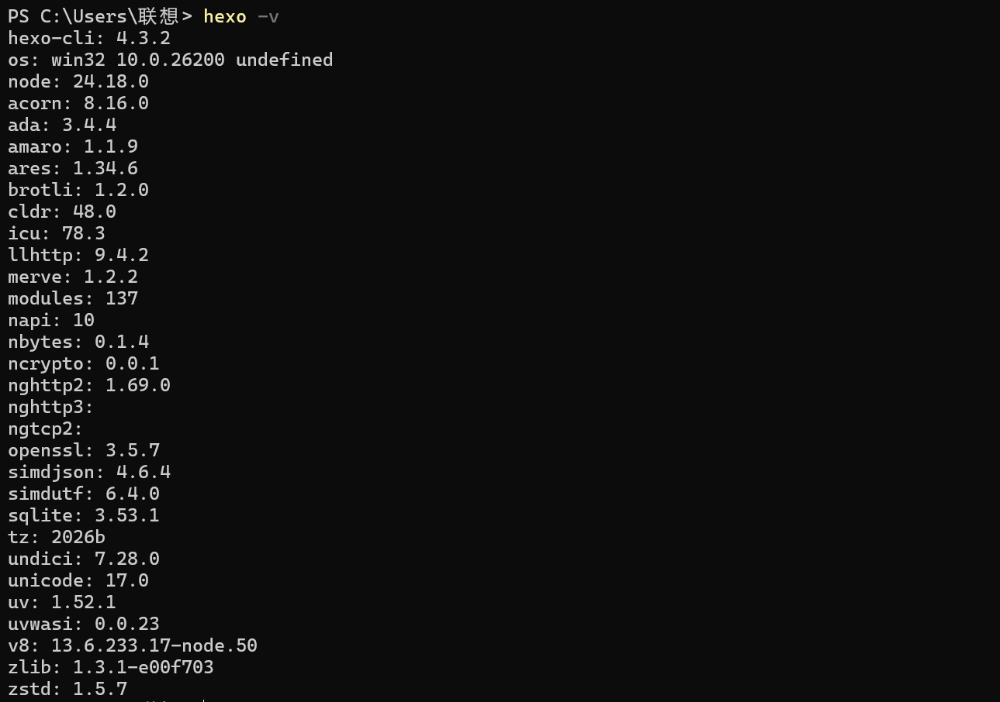
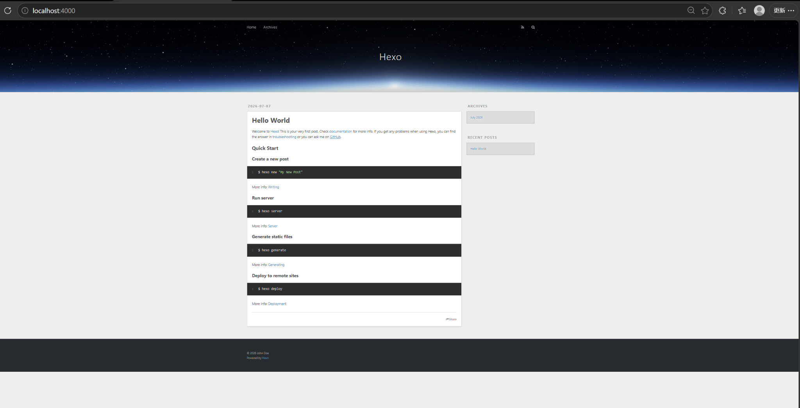

问题分析与结果验证
使用 winget 下载 Node.js 时曾出现网络连接失败，之后改用可用安装来源完成安装；npm 默认源访问不稳定时，通过配置镜像源解决。最终 Git、Node.js、npm、Hexo 均能返回版本信息，Hexo 本地服务器可访问。
二、实验二 代码编辑与管理
实验目标
使用 VS Code 编写 Markdown、HTML 和 Hexo 配置文件，使用 Git 记录项目阶段性修改，并保留可检查的提交历史。
关键操作
git status git add . git commit -m "初始化 Web 开发环境静态报告" git log --oneline --decorate -5

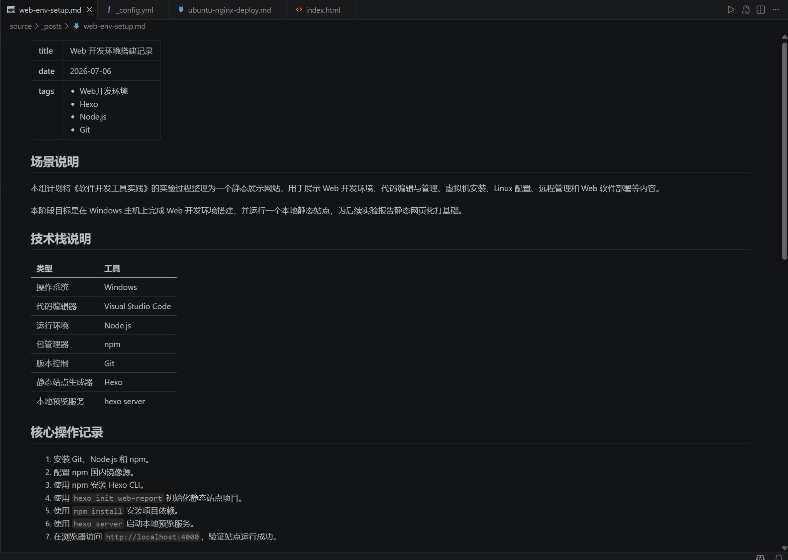
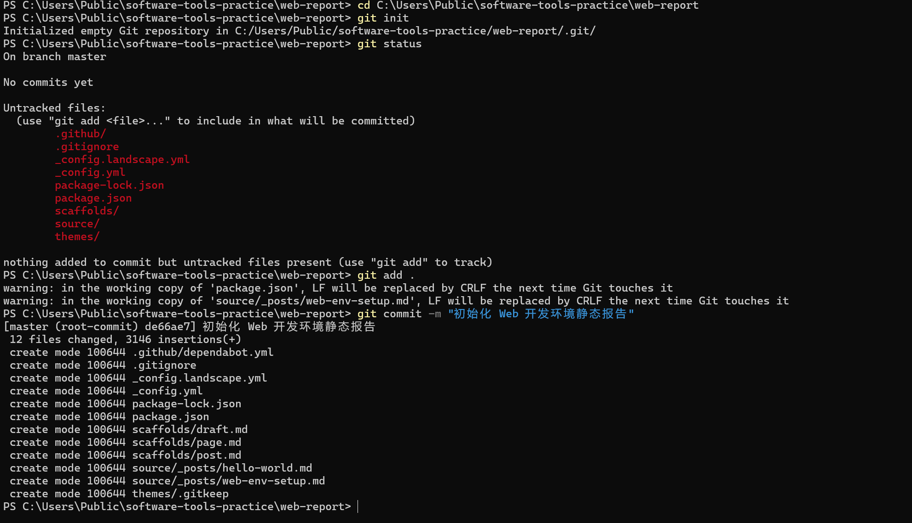
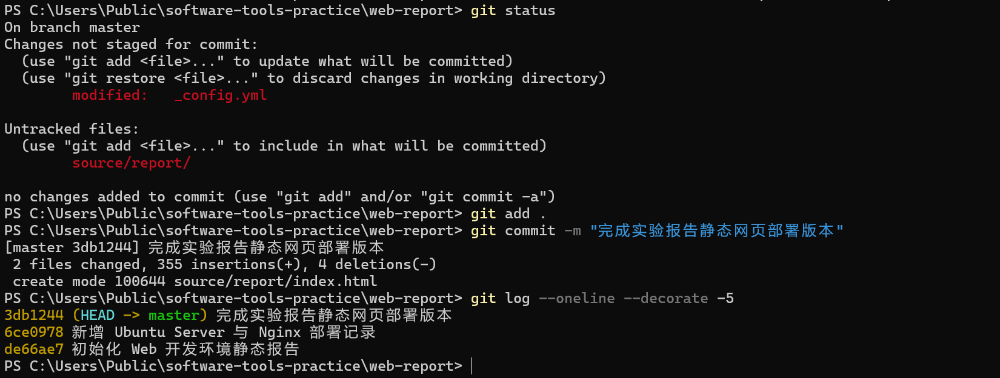
结果验证
VS Code 能够编辑和预览报告，Git 能够显示工作区状态和提交记录。源码、配置、报告和截图按项目目录保存，便于后续生成与部署。
三、实验三 虚拟机安装与配置
实验目标
使用 VirtualBox 创建 Ubuntu Server 22.04 LTS 虚拟机 node1，完成系统安装、OpenSSH Server 选择和基础网络验证。
| 虚拟化软件 | Oracle VM VirtualBox | 网络模式 | NAT |
|---|---|---|---|
| 客户机系统 | Ubuntu Server 22.04 LTS | 安装组件 | OpenSSH Server |
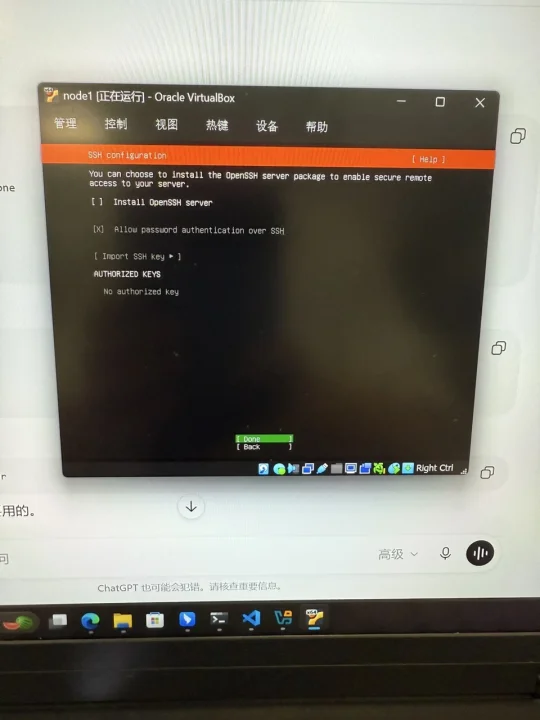
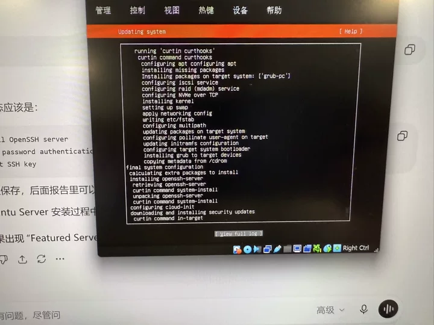
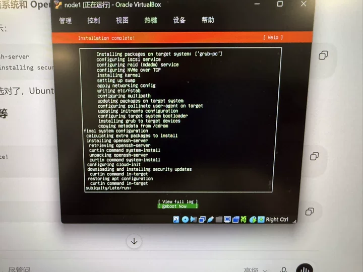
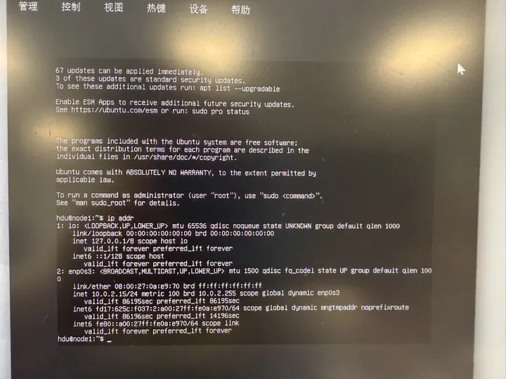
问题分析与结果验证
安装完成后曾遇到 VirtualBox 菜单中“移除虚拟盘片”不可用的问题。关闭虚拟机后在“存储”设置中移除 Ubuntu ISO，再启动虚拟机，系统可正常从虚拟磁盘进入 Ubuntu。
四、实验四 Linux 基本操作
实验目标
掌握系统信息查看、文件与目录管理、文本处理、软件包管理和系统资源查看等基础操作。
用户和系统信息
whoami hostname pwd uname -a cat /etc/os-release
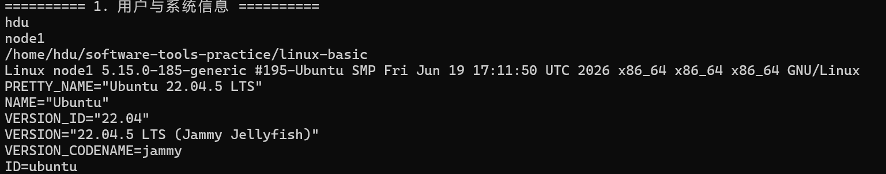
文件、目录、查找与文本处理
mkdir -p ~/software-tools-practice/linux-basic printf "software tools practice\nlinux command test\n" > course.txt cp course.txt course-copy.txt mv course-copy.txt renamed-course.txt ls -l cat course.txt grep "linux" course.txt find . -name "*.txt" wc -l -w -c course.txt
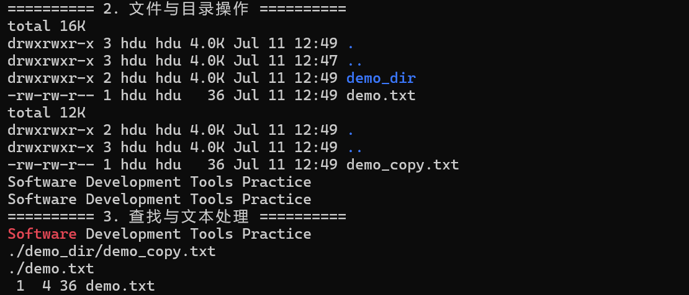
软件包与系统资源
sudo apt update sudo apt install -y tree which tree tree --version tree . df -h / free -h
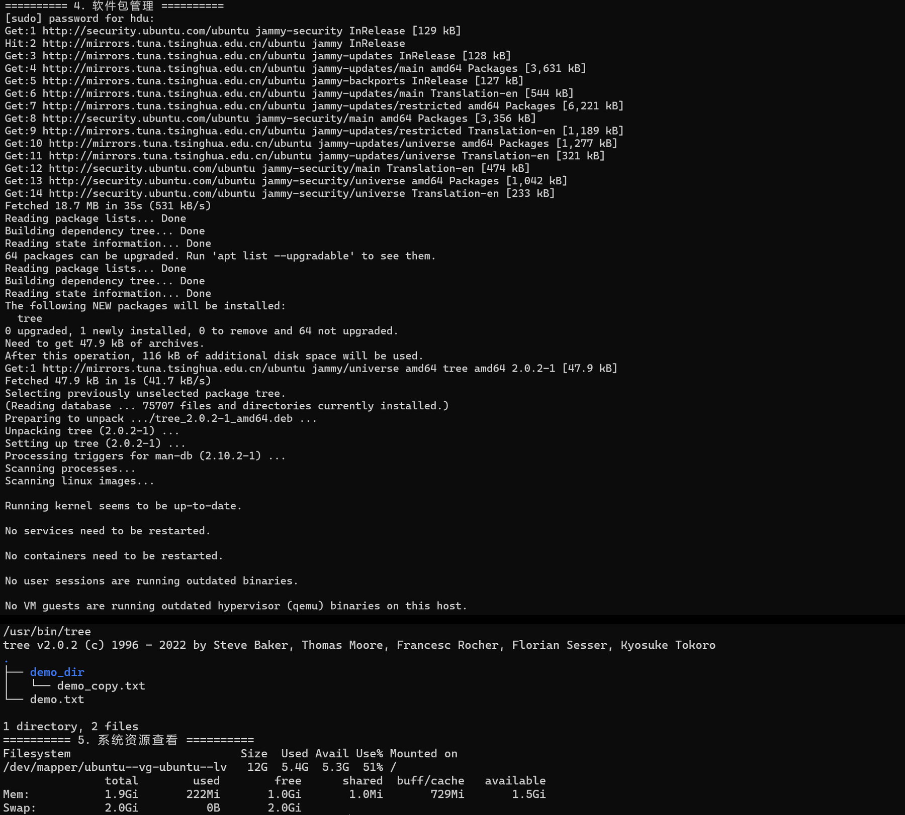
结果验证
本实验所列命令均有实际输出，测试目录和文本可被查找、读取和统计，tree 可正常运行，磁盘与内存状态可查询。
五、实验五 Linux 账户与权限管理
实验目标
查看已有账户，创建实验用户和用户组，配置 Home、共享目录、测试文件与 SSH 关键文件权限，并验证组权限。
关键操作与最终配置
id hdu getent passwd hdu echo $HOME groups hdu ls -ld /home/hdu
创建 webteam 组和 webstudent 账户；账户 Home 为 /home/webstudent，Shell 为 /bin/bash，并将 hdu 与 webstudent 加入 webteam。
| 对象 | 所有者与组 | 权限 |
|---|---|---|
| /home/webstudent | webstudent:webteam | 750 |
| /home/webstudent/course-share | webstudent:webteam | 750 |
| account-test.txt | webstudent:webteam | 640 |
| ~/.ssh | hdu 用户 | 700 |
| ~/.ssh/authorized_keys | hdu 用户 | 600 |
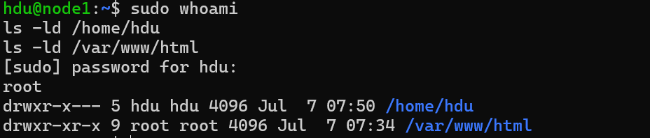
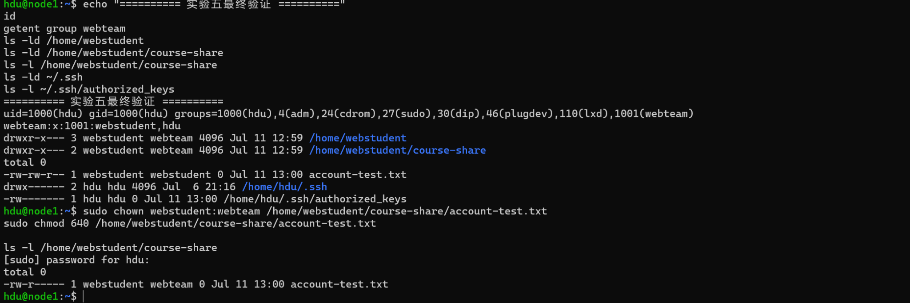
问题分析
最初 hdu 访问 /home/webstudent/course-share 时出现 Permission denied。原因是上级目录所属组和当前 SSH 会话的组状态未正确刷新。将 /home/webstudent 所属组改为 webteam、权限设为 750，并退出 SSH 重新登录后，hdu 可成功访问共享目录。
六、实验六 Linux 环境配置
实验目标
分别配置系统级和用户级 Shell 环境变量，理解配置文件作用范围，并通过重新登录验证持久化。
系统级与用户级配置
/etc/profile.d/software-tools-practice.sh 的所有者和权限为 root:root、644：
export WEB_ROOT="/var/www/html" export REPORT_PATH="/var/www/html/report" export COURSE_ENV="software-tools-practice"
在当前用户的 ~/.bashrc 中加入：
export USER_WORKSPACE="$HOME/software-tools-practice" alias cpractice='cd "$USER_WORKSPACE"'
/etc/profile.d/ 适合登录 Shell 的系统级统一变量；~/.bashrc 只影响当前用户的 Bash 交互环境；Ubuntu 的 ~/.profile 会按条件加载 ~/.bashrc。使用 source 只证明当前会话可加载，因此还要重新登录验证自动加载与持久化。
WEB_ROOT=/var/www/html REPORT_PATH=/var/www/html/report COURSE_ENV=software-tools-practice USER_WORKSPACE=/home/hdu/software-tools-practice
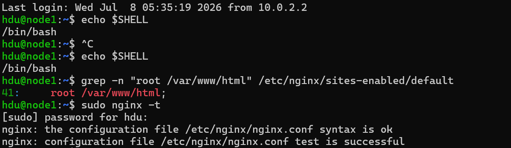
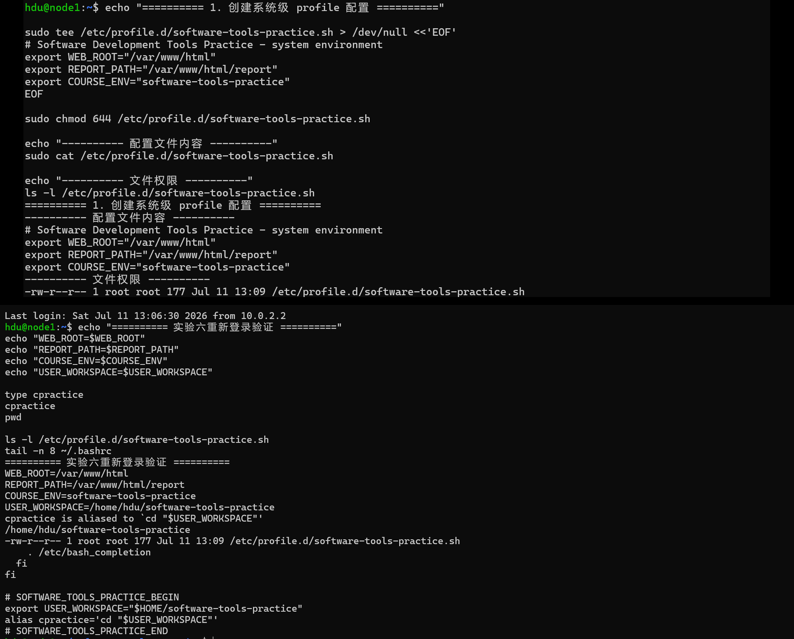
七、实验七 远程管理
实验目标
配置并验证 OpenSSH Server，通过 VirtualBox NAT 端口映射从 Windows 登录 Ubuntu，增加基础安全配置，并使用 SCP 完成文件传输。
SSH 服务与端口转发
OpenSSH Server 已安装，服务状态为 enabled、active，Ubuntu 内部监听 22 端口。VirtualBox 将 Windows 127.0.0.1:2222 映射到 Ubuntu 22。

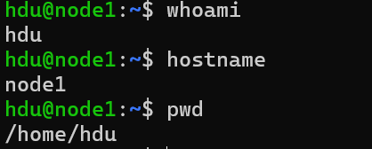
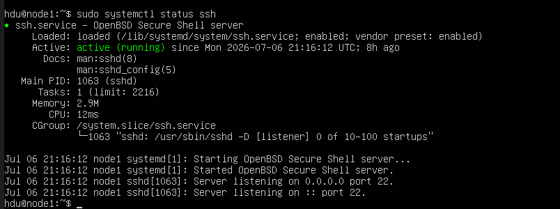
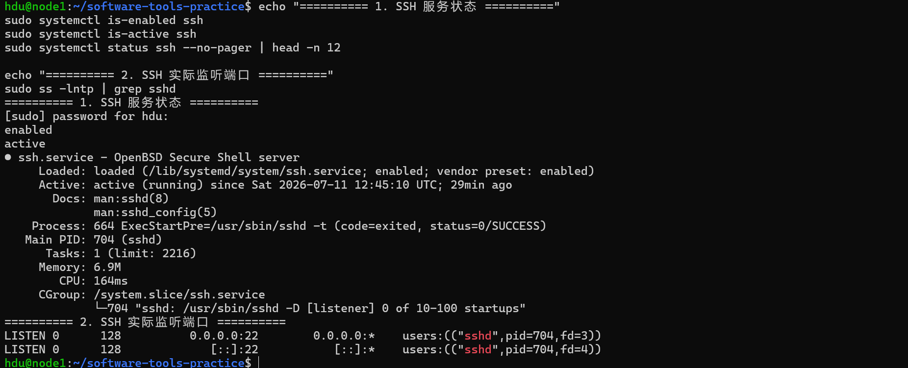
SSH 安全配置
port 22 pubkeyauthentication yes passwordauthentication yes maxauthtries 6
在 /etc/ssh/sshd_config.d/99-course-security.conf 中配置 PermitRootLogin no，再执行：
sudo sshd -t sudo systemctl restart ssh sudo systemctl is-active ssh
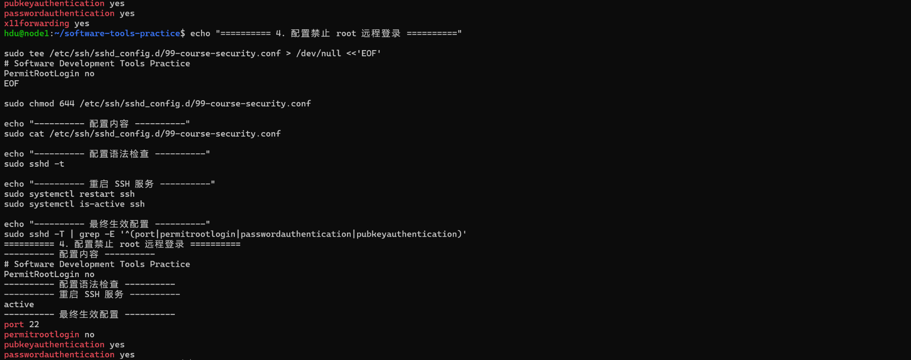
SSH 与 SCP 验证
ssh -p 2222 hdu@127.0.0.1 scp -P 2222 ssh-transfer-test.txt hdu@127.0.0.1:~/software-tools-practice/
Ubuntu 中读取到 Remote management transfer test。

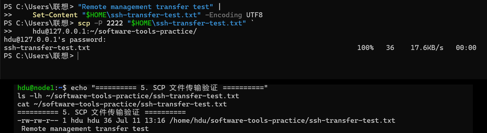
首次输入密码错误曾导致 Permission denied，确认用户名和端口并重新输入正确密码后成功。本报告不记录密码或 authorized_keys 内容。
八、实验八 Web 软件部署
实验目标
使用实际存在且已成功运行的 deploy.ps1 完成 Hexo 构建、SSH/SCP 上传、Nginx 部署、权限设置、配置检查和 HTTP 验证。
Nginx 与部署目录
站点目录为 /var/www/html/，报告入口为 /var/www/html/report/index.html。
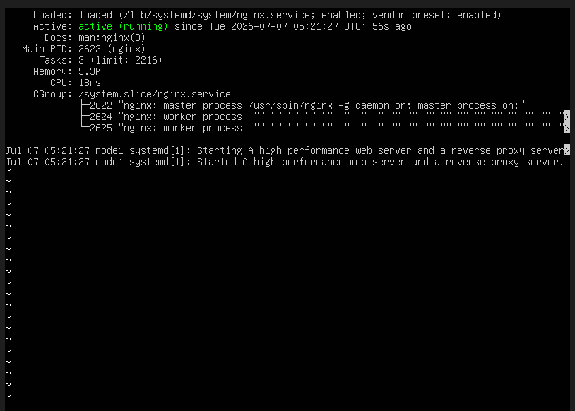
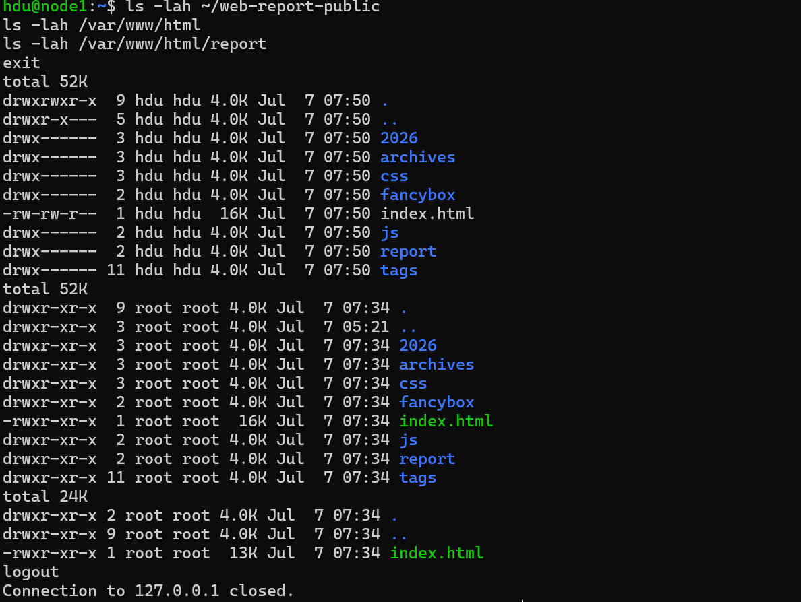
自动部署脚本
脚本依次检查本地 Hexo，执行 clean 和 generate，检查生成入口，清理远程暂存目录，SCP 上传 public，复制到 Nginx 目录，为目录设 755、文件设 644，执行 nginx -t，reload Nginx，检查报告文件并验证 HTTP。
& $HexoCommand clean
& $HexoCommand generate
if (-not (Test-Path $ReportIndex)) { throw "Generated report was not found" }
& scp -P $SshPort -r $PublicDirectory $RemoteTarget
& ssh -tt -p $SshPort "${RemoteUser}@${ServerHost}" $RemoteCommand
& curl.exe -I "http://127.0.0.1:8080/report/"
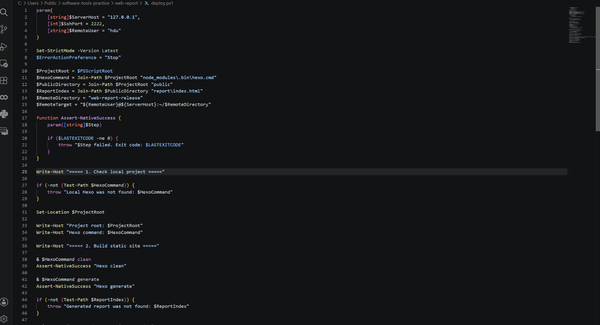
HTTP 访问验证
Nginx deployment completed. HTTP/1.1 200 OK Deployment succeeded.
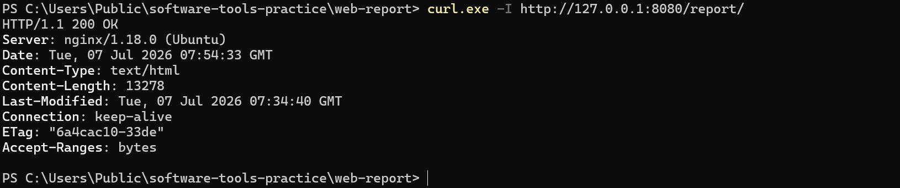
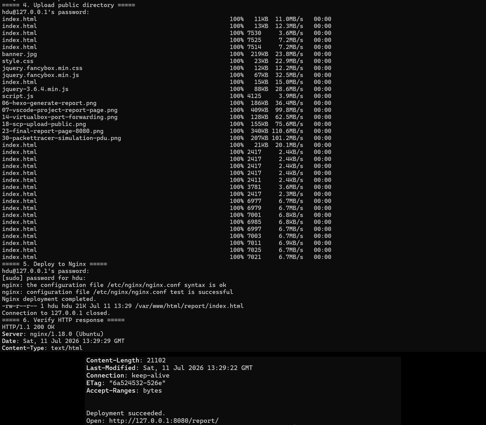

局域网发布与多终端访问
原规则 127.0.0.1:8080 仅供本机访问。新增 VirtualBox NAT 转发 HTTP-LAN,tcp,0.0.0.0,8081,,80，并新增 Windows 防火墙规则：
DisplayName: VirtualBox Nginx LAN 8081 Direction: Inbound Action: Allow Profile: Any
实验时 Windows 校园网 IPv4 为 10.150.103.10，局域网地址为 http://10.150.103.10:8081/report/。0.0.0.0:8081 表示 Windows 所有网络接口均可接收请求，再由 VirtualBox 转发到 Ubuntu 80 端口。Nginx 可处理多个终端请求，同一局域网设备可使用同一地址访问。
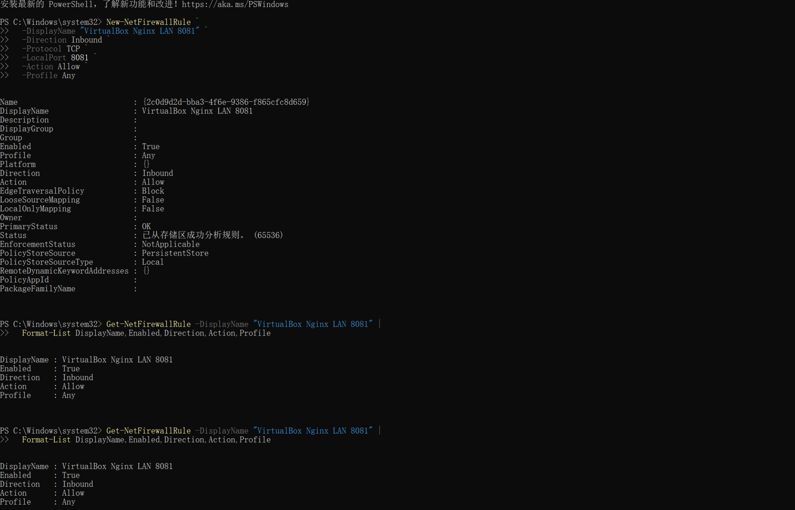
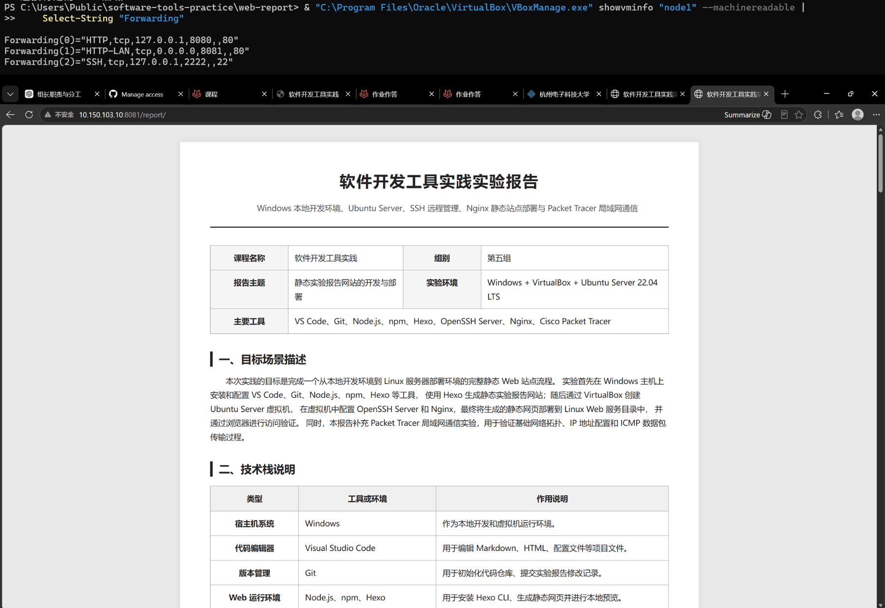
问题分析与结果验证
首次部署后曾出现样式未完整加载的问题。重新执行 Hexo 清理与生成，并上传完整 public 目录后恢复。中文乱码通过 UTF-8 保存及 <meta charset="UTF-8" /> 解决。最终本机和校园网局域网地址均完成访问验证。
九、扩展实验：Packet Tracer 局域网通信
实验定位与目标
Packet Tracer 是正式八个实验之外的网络基础扩展实践，不能替代 Linux 基本操作、账户权限或环境配置。本实验用于观察简单局域网拓扑、IP 配置、Ping 和 ICMP 转发。
安装、拓扑与地址配置
Cisco Packet Tracer 已完成安装并运行，拓扑为 PC0 — Switch — PC1。
| 设备 | IPv4 地址 | 子网掩码 |
|---|---|---|
| PC0 | 192.168.1.1 | 255.255.255.0 |
| PC1 | 192.168.1.2 | 255.255.255.0 |
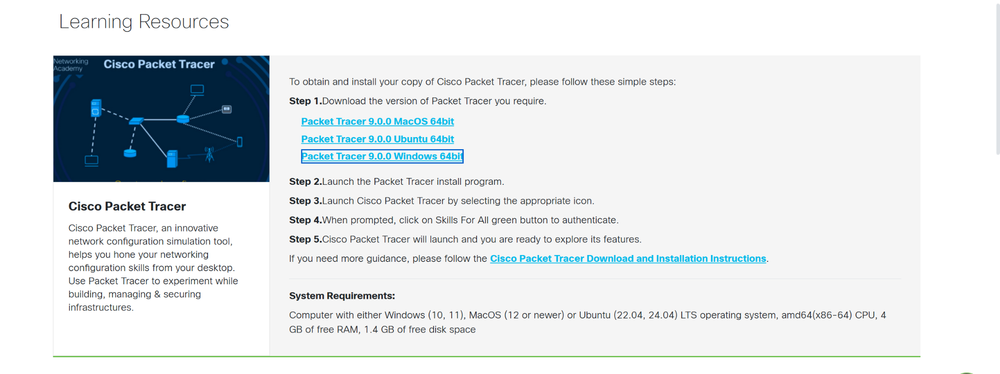
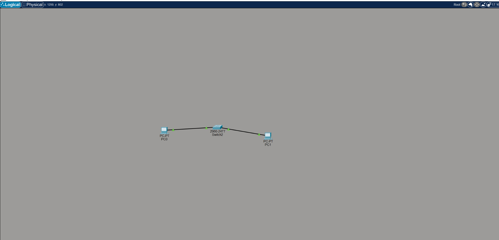
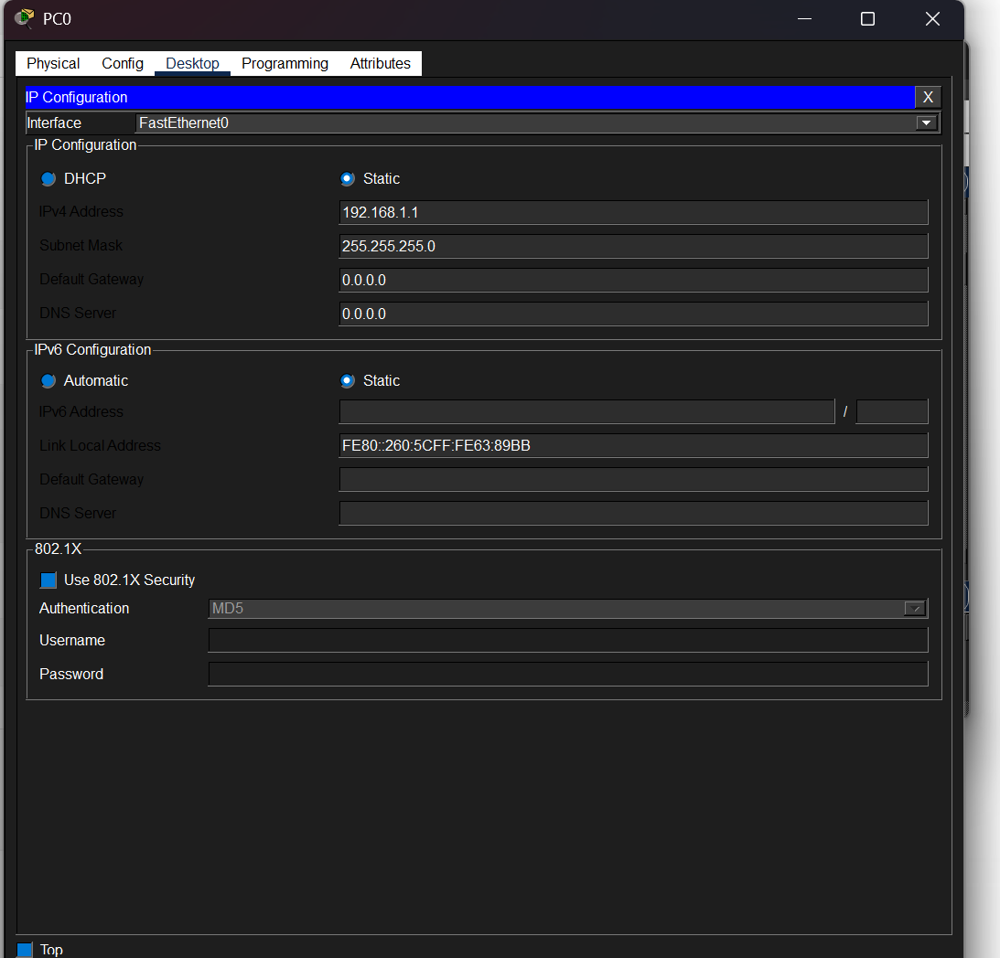
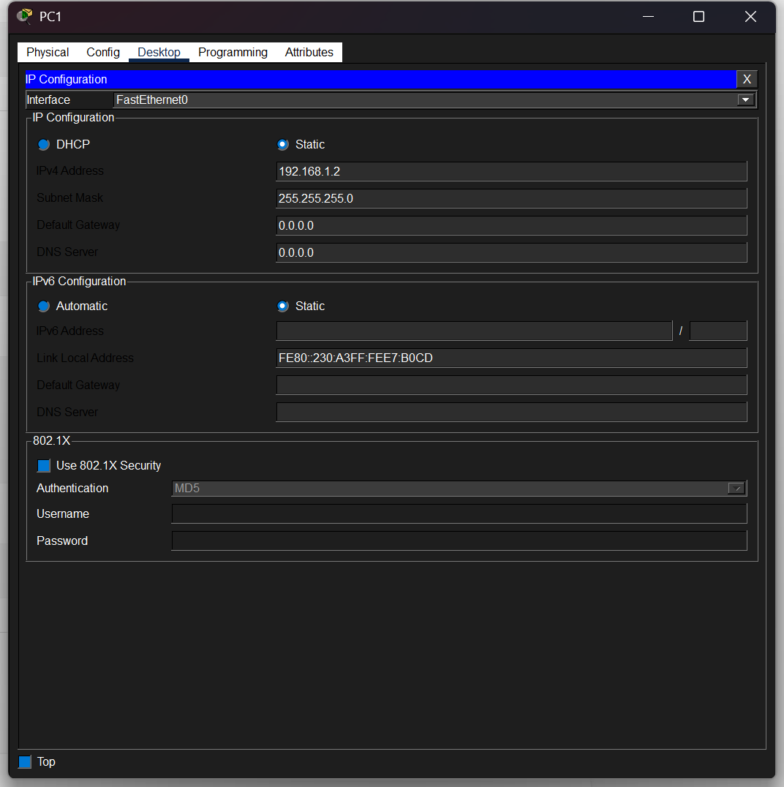
Ping 与 Simulation 验证
PC0> ping 192.168.1.2 Sent = 4 Received = 4 Lost = 0
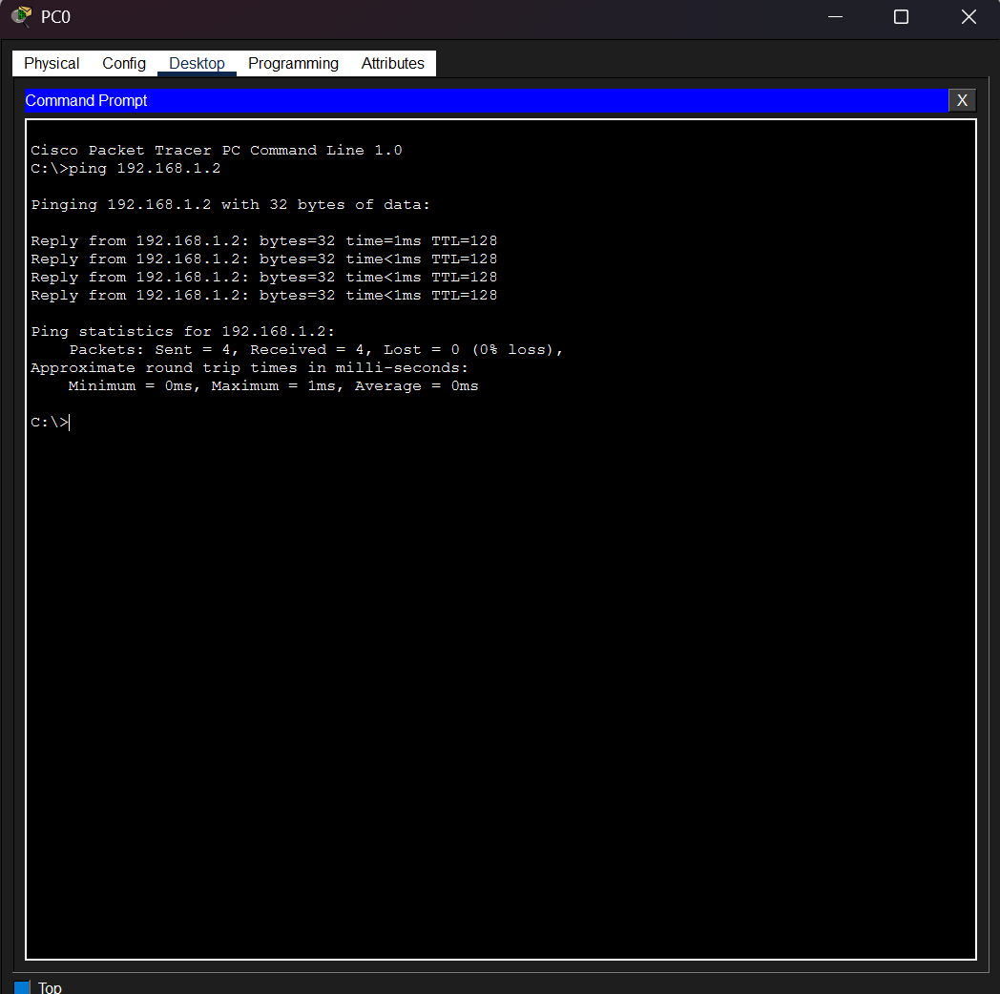

十、技术展望
主题：将 Hexo 手工部署升级为 GitHub Actions + SSH 自动化部署
当前方案是在 Windows 本地维护 Hexo 项目，手动运行 deploy.ps1，通过 SSH/SCP 上传到 Ubuntu，再由 Nginx 发布。该方案可用，但需要人工启动脚本和输入认证信息，依赖本地环境，也可能因漏执行生成或上传步骤造成版本不一致。
可调研 GitHub Actions、GitLab CI/CD、Jenkins、Gitee Go，并比较 VitePress、Hugo、Caddy。结合现有 GitHub、Hexo、SSH 和 Nginx 环境，最终升级方向选择 GitHub Actions + SSH Key + Nginx。
升级流程
- 向 main 分支推送经检查的源码。
- Actions 检出代码并安装指定 Node.js。
- 执行 npm ci 和 Hexo 生成。
- 将部署专用 SSH 私钥存入 GitHub Secrets，不写入仓库。
- 使用 rsync 或 scp 上传到带时间戳的暂存目录。
- 执行 nginx -t，通过后切换版本并 reload。
- 执行 HTTP 检查；任一步失败立即停止。
风险、回滚与验收
风险包括私钥泄露、Secrets 配置错误、上传中断、Nginx 配置错误和 Actions 权限不足。应使用最小权限部署账户和密钥，限制部署分支，不在日志中输出敏感值，并保留部署历史。
远程目录按时间戳保存 release，以软链接指向当前版本。失败时恢复 previous，不直接删除旧版本。验收标准是：推送后自动运行、依赖安装和构建成功、页面正常、HTTP 200、不需要手工 SCP。
调研方法与参考资料
调研方法包括阅读官方文档、检索 Actions Marketplace、分析开源 workflow、查阅技术社区文章和对比实验。
十一、实践总结、心得体会与意见建议
客观实践总结
本次实践形成了可验证流程：在 Windows 配置开发工具，使用 VS Code 编写报告并由 Git 管理；在 VirtualBox 安装 Ubuntu Server，完成 Linux 基本操作、账户权限和环境配置；通过 SSH 与 SCP 远程管理；由 Hexo 生成静态文件并使用 Nginx 发布；最后通过本机和校园网局域网地址验证访问。Packet Tracer 作为八个正式实验之外的扩展实践单独记录。
实验心得体会
这次实践刚开始的时候，我以为主要就是安装软件、照着手册输命令，再把截图放进报告里。真正做下来以后才发现，八个实验其实是连在一起的。前面搭建 Windows 开发环境和 Hexo 项目，后面又要把网页传到 Ubuntu，再通过 Nginx 发布，少了任何一步，最后的网站都跑不起来。
整个过程中我遇到的问题比预想中多。最明显的一次是我启动虚拟机之后，没有先通过 SSH 进入 Ubuntu，就直接在 Windows PowerShell 里执行了 uname、grep、apt 等 Linux 命令，结果全部报错。当时我还以为是虚拟机或者命令有问题，后来才发现自己根本没有进入 Linux 环境。配置 Linux 账户权限时，我给共享目录设置了用户组和权限，但 hdu 访问时还是出现 Permission denied，最后检查才发现上级 Home 目录的所属组和当前 SSH 会话的用户组状态都会影响访问，修改权限并重新登录后才正常。后面写 deploy.ps1 时又遇到了中文乱码和 here-string 被提前截断的问题，脚本看起来写好了，实际上有一部分命令却直接在 PowerShell 中运行了。这个过程让我意识到，看到报错不能只反复重试，应该先确认自己当前在哪个环境，再检查路径、权限、端口、编码和服务状态。
最后部署脚本能够自动执行 Hexo 构建、SCP 上传、Nginx 配置检查和 HTTP 状态验证，并成功返回 HTTP/1.1 200 OK。我还通过校园网地址打开了部署在 Ubuntu 中的网页。相比一开始只会在本地打开 HTML，现在我对从代码编辑、版本管理、文件传输到服务器部署的整个流程有了更完整的理解。
这次实践给我最大的感受是，很多工具单独看并不难，真正麻烦的是把它们连接起来，并且保证每一个环节都正确。Git、VirtualBox、Linux、SSH 和 Nginx 以前在我看来是几块分开的内容，这次做完后才真正理解它们在一个项目里分别负责什么。以后再遇到类似问题，我应该会比以前更愿意根据报错一步一步定位，而不是直接重装或者从头再做。
意见与建议
我觉得这门实践课的内容比较实用，特别是 Linux 权限、SSH 远程登录和 Web 部署这些部分，和以后真正做项目有比较直接的联系。以前学编程时更多关注代码本身，这次能够看到网页怎样从本地文件变成服务器上可以访问的站点，体验还是比较完整的。
不过八个实验集中在一周左右完成，后半部分内容比较密集，Linux 账户权限、环境变量、端口转发和部署很容易混在一起。建议以后可以提前提供一个统一的目录结构和最终成果示例，并在课堂上完整演示一次“本地生成网页—SSH 登录—SCP 上传—Nginx 部署—其他设备访问”的全过程。GitHub 小组协作方面也可以增加一次分支创建、Pull Request、冲突处理和合并的演示，这样组员各自在不同分支提交材料时会更清楚，也不容易把文件传到错误目录。
十二、六项考核内容对应表
| 考核项目 | 报告对应内容 | 关键证据 |
|---|---|---|
| 项目与代码库配置 | 实验二 | VS Code、Git、GitHub、提交记录 |
| Web 运行环境 | 实验一 | Node.js、npm、Hexo、localhost |
| Linux 环境配置 | 实验六 | profile.d、bashrc、环境变量 |
| Linux 账户配置 | 实验五 | hdu、webstudent、webteam、Home、权限 |
| 远程管理配置 | 实验七 | SSH、端口、登录安全、SCP |
| Web 站点部署 | 实验八 | deploy.ps1、Nginx、HTTP 200、LAN 访问 |
Packet Tracer 仅作为扩展实验，不强行映射到上述六项考核内容。
十三、证据材料清单
| 类别 | 文件编号 | 对应内容 |
|---|---|---|
| Git / Node.js / npm / Hexo | 01–06、09、24 | 开发环境、构建和版本记录 |
| VS Code / Markdown | 07–08 | 源码编辑与报告预览 |
| VirtualBox / Ubuntu Server | 10–14 | 虚拟机安装与网络配置 |
| Linux 基本操作 | 31–33 | 系统信息、文件文本、软件包和资源 |
| Linux 账户与权限 | 19、34 | 用户、组、Home、共享目录和权限 |
| Linux 环境配置 | 21、35 | profile.d、bashrc 与持久化 |
| SSH / SCP | 15–16、18、36–38 | 服务、端口、安全登录和文件传输 |
| Nginx / 自动部署 / LAN | 17、20、22–23、39–42 | 服务、脚本、HTTP 200 与局域网访问 |
| Packet Tracer | 25–30 | 安装来源、拓扑、IP、Ping 和 Simulation |
HTML 图片统一使用 ./images/文件名.png，由 Hexo 生成到 public/report/images/。